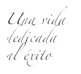
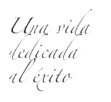

Nuestro legado
El Dr. Cevdet Tuna fue uno de los primeros doctores en Turquía, fundó FARMASi hace más de 70 años. Estableció una de las primeras fábricas farmacéuticas en Turquía “Tege Pharmaceutical Factory”.
El Dr. C. Tuna formuló algunos de los primeros medicamentos turcos incluyendo: jarabe para la tos, ungüento para las quemaduras y pastillas para la tos.
 

Farmasi
Con una trayectoria de 71 años en la industria cosmética y de la salud, Farmasi, fundada en 1950 por el Dr. C. Tuna, ha establecido una sólida reputación, combinando lo mejor de la ciencia y la naturaleza en sus productos.
El Dr. Tuna ha desempeñado un papel fundamental al aportar su experiencia y conocimientos para ofrecer productos confiables y de calidad en el mercado cosmético y de la salud.
Actualmente, Farmasi es una empresa activa en 33 países y cuenta con presencia en 125 mercados. Su planta de producción, ubicada en Estambul, Turquía, es una de las más grandes del mundo y les permite tener un control completo sobre todo el proceso de fabricación, desde la creación de los productos hasta la producción de los envases. Han establecido altos estándares de calidad respaldados por rigurosos estudios científicos, lo que les permite garantizar la satisfacción de sus clientes.
En Colombia contamos con centro de distribución en la ciudad de Bogotá.
FARMACITY
- Fábrica con ambiente eco amigable.
- Una de las instalaciones de manufactura más grande de Europa.
- 10 diferentes fábricas construidas en 300.000 metros cuadrados.